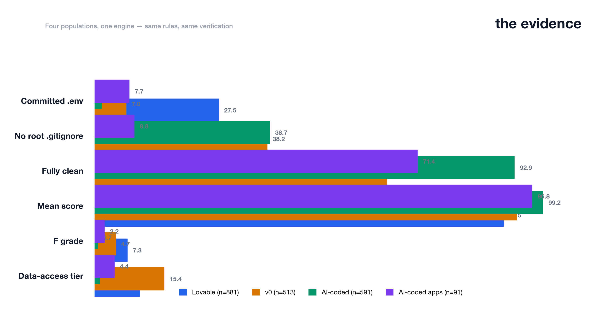

The comparison
2,076 apps across Lovable, v0, and the general AI-coded population — every finding verified by hand, role-verified JWTs, RLS-aware.

| Lovable (N=881) | v0 (N=513) | AI-coded (N=591) | AI-coded apps (N=91) | |
|---|---|---|---|---|
| Committed .env | 27.5% | 7.0% | 1.5% | 7.7% |
| No root .gitignore | 10.4% | 38.2% | 38.7% | 8.8% |
| Fully clean | 50.9% | 64.7% | 92.9% | 71.4% |
| Mean score | 90.5 | 93.4 | 99.2 | 96.8 |
| F grade | 7.3% | 4.7% | 0.7% | 2.2% |
| Data-access tier | 10.0% | 15.4% | 1.2% | 4.4% |
| Verification drop rate | 12.5% | 22.6% | 82% | — |
The finding: Lovable apps leak through .env because
Lovable builds env-wired apps (27.5%). v0 apps leak through code
because v0 builds code-heavy frontends (15.4% tier A). Self-described
AI-coded apps leak at 7.7% even when filtered to app shape. AI
coding isn't the problem — the generators' default workflows are.